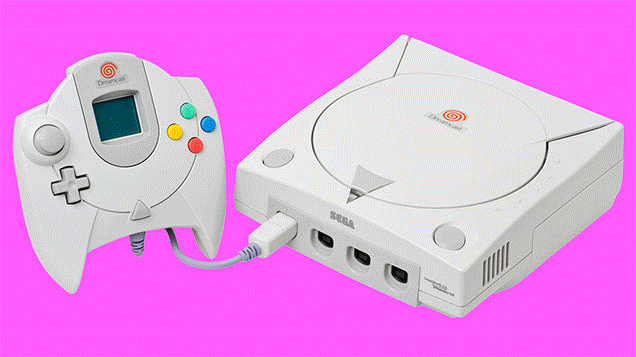

Una videoconsola, consola de videojuegos, sistema de videojuegos, abreviado en consola o sistema, es un sistema electrónico de hardware para el hogar diseñado específicamente para jugar a videojuegos.Las consolas de videojuegos nacieron para el uso doméstico, a diferencia de las máquinas arcade que se instalaban en lugares públicos de entretenimiento.Las llamadas de salón suelen conectarse al televisor, aunque las portátiles cuentan con una pantalla propia, por lo cual cada compañía puede decidir sus características con total libertad.
Hay 3 grandes empresas que comparten el negocio de las videoconsolas, Sony, Nintendo y Microsoft. Podemos hacer una primera distinción de los tipos en función del sitio donde se pueden utilizar: - Consolas de Bolsillo: son consolas portátiles por su pequeño tamaño. - Consolas de Salón: necesitan una pantalla, normalmente la de la televisión, para jugar con ellas. Tienes mejores características y mejores gráficas, en definitiva son más potentes que las de bolsillo, aunque también suelen ser mas caras.
- De Microsoft: comercializa la llamada Xbox, la última se llama Xbox One que incluye una cámara Kinect. La cámara Kinect permite al jugador
interactuar con el juego sin necesidad de tener contacto físico con la pantalla, ni con el mando. Es decir captura los movimientos del jugador.
La cámara Kinect viene en el paquete con la propia videoconsola y con un mando para el jugador. El precio de la Xbox One es alrededor 375€ en Amazon.
Antes de esta consola Microsoft vendía la Xbox 360, de la que vendió millones de unidades. Aquí puedes ver la nueva Xbox One
- De Nintendo: de salón vende las famosas Wii, la última en sacar ha sido la Wii U. Sus predecesoras,
las famosas consola Wii tienen mandos que no necesitan conectarse por que lleva un sensor de movimiento de
los mandos, pero la Wii U ahora lleva un mando nuevo llamado Wii U GamePad, que en realidad es otra pantalla portátil.
El GamePad es lo más innovador de nintendo.
- De Sony: Sony comercializa las llamadas PlayStation o PSP (abreviatura de PlayStation). Coloquialmente se la suele llamar la Play.
La última en salir es la PlayStation 4 o PSP 4. Estas consolas están más próximas a un ordenador de sobremesa, pero están diseñadas para videojuegos.
Son las más potentes en cuanto a gráficos de todas las existentes. La PSP4 tiene una consola con un disco duro de 500GB, un mando inalámbrico con un panel central Led táctil.
Su precio es alrededor de los 375€, aunque ya sabes que siempre puedes encontrar ofertas. Antes de la PSP4 Sony vendió la famosísima PSP3. Las PSP3 y PSP4 nos permiten jugar con
jugadores online (multijigador) de forma gratuita, siempre que tengamos conexión a internet.
 - De Microsoft: Esta empresa no vendía consolas portátiles, pero ahora se ha subido al carro de las portátiles con su consola llamada Zune HD, parecida a un Smartphone. Contará con un diseño muy estilizado, una enorme pantalla táctil, un sistema operativo minimalista y capacidades para reproducir vídeo, música, conexión a internet y videojuegos. - De Nintendo: Las portátiles de Nintendo se caracterizan por tener doble pantalla. La última que ha sacado es la Nintendo 2DS y su predecesora fue la Nintendo 3DS.